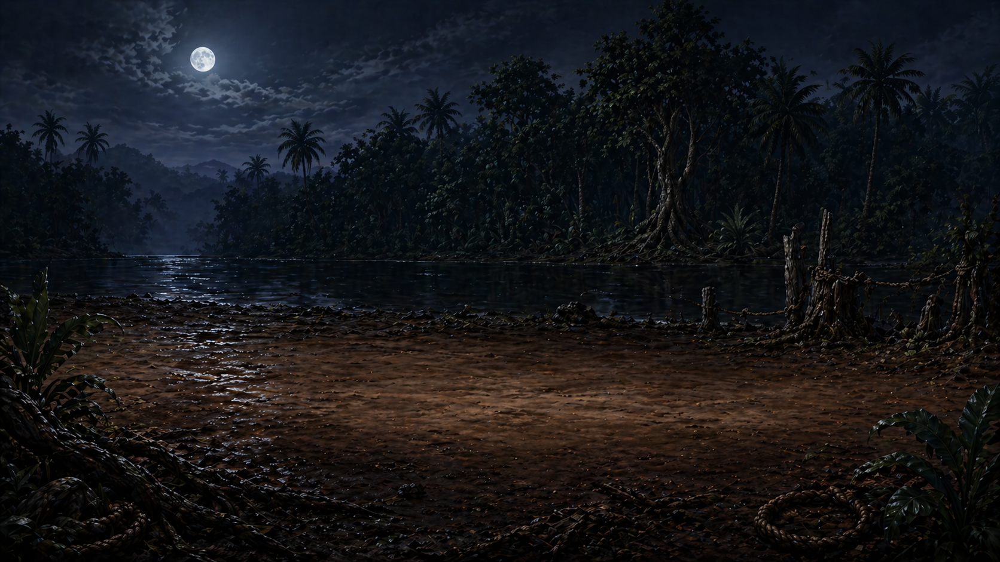
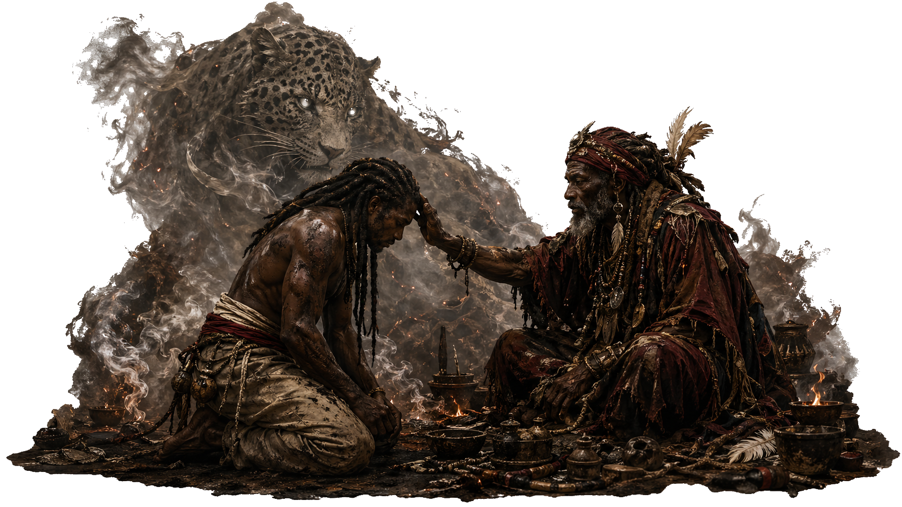
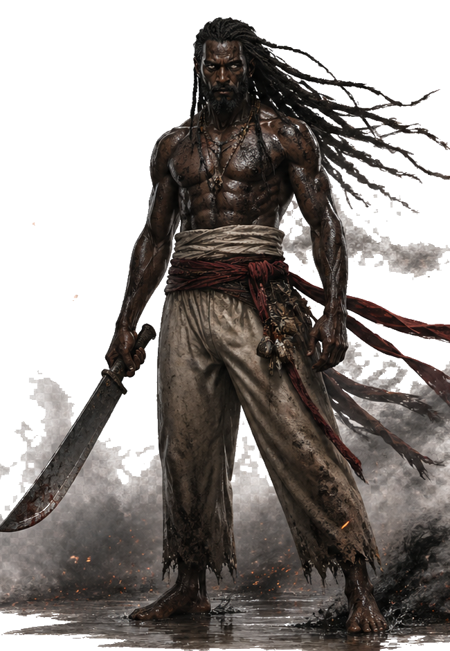
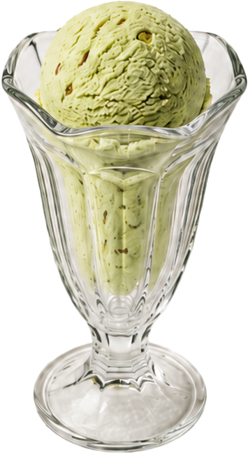
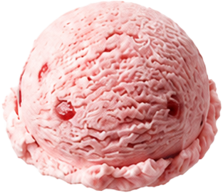
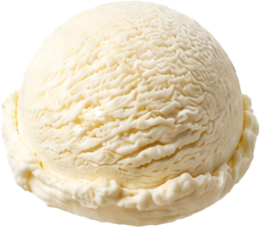
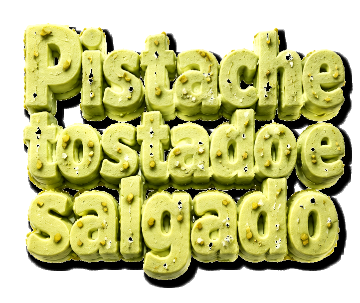
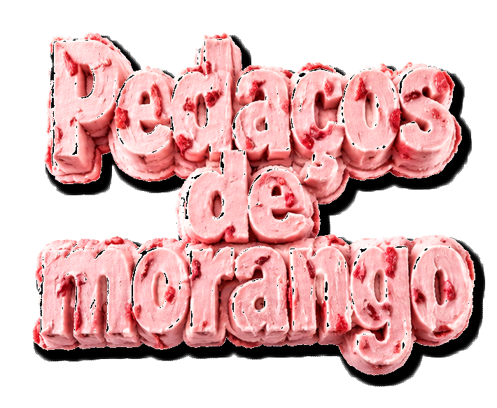
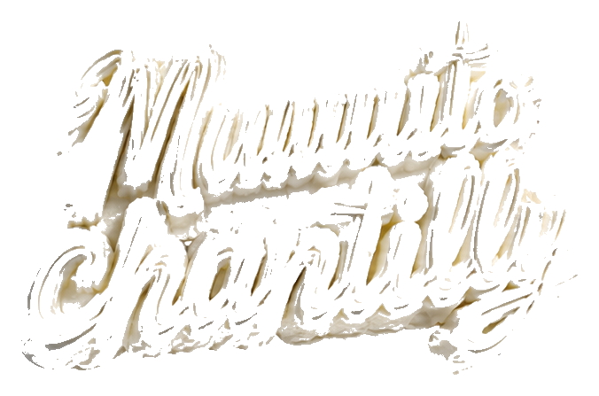

Creative leadership in agencies, brand projects and production workflows.
Remote creative direction - PT/EN
Creative direction for AI-assisted production systems.
I help teams turn briefs into visual concepts, production pipelines and polished creative outputs across video, motion, brand systems and high-volume creative ops.
GenAI used for exploration, prototyping, refinement and production speed.
Briefing, prioritization, review systems, quality control and repeatable delivery.
Clear artifacts, async rationale, English communication and stakeholder alignment.
Positioning
Not just "AI images." Direction, workflow and final craft.
My strongest fit is the overlap between creative direction, AI-assisted storytelling, motion/video production and Creative Ops. The cases below are built to show the thinking behind the work: brief, concept, pipeline, iterations, direction and result.
The goal is simple: help remote teams move faster without losing narrative, brand consistency, visual quality or decision clarity.
Selected case narratives
Two proof-of-work cases for remote creative roles.



Case 01 - AI-assisted cinematic storytelling
From original IP concept to immersive narrative prototype.
A cinematic web prototype that turns early worldbuilding into a tangible creative artifact: scene structure, visual direction, motion, audio atmosphere and interactive delivery.
- Brief
- Communicate mood, conflict and character without relying on a long pitch deck.
- Concept
- A chapter-based prequel experience with scroll-driven cinematic progression.
- Pipeline
- Worldbuilding, scene list, visual system, motion prototype, review and refinement.
- Result
- A remote-friendly artifact for pitch alignment, branded experiences and AI video workflows.
Case 02 - Creative Ops product prototype
From ambiguous visual request to focused parallax composition.
A product-layer prototype that reframed the assignment from "landing page" to "interactive product composition," using criteria, direction tests, asset treatment and a documented scorecard.
- Brief
- Use supplied static PNG layers and ingredient callouts as the core visual event.
- Concept
- A dark parallax stage with product first, interface second and controlled motion.
- Iterations
- Three directions compared: corrected landing, editorial exploded view and dark stage.
- Result
- A clearer creative decision system for remote review and high-volume production.






Role fit
Best match for remote creative opportunities.
86
AI Video Creative Director
Best match. Combines AI, storytelling, video craft, creative leadership and remote collaboration.
Superside-style target80
Art Direction + Creative Strategy
Strong fit for branding, campaigns, presentations, entertainment and strategic visual systems.
Jobgether-style target72
AI Narrative Video Director
Good fit if positioned around short-form storytelling, vertical video and hands-on AI production.
EverAI-style targetOperating system
The repeatable workflow behind the work.
-
01
Brief diagnosis
Clarify the real creative problem before producing outputs.
-
02
Concept system
Define tone, audience, visual logic, narrative role and success criteria.
-
03
AI-assisted exploration
Use GenAI to expand options while keeping direction, brand logic and quality control.
-
04
Iteration and review
Compare directions with criteria, not taste alone, and document why decisions win.
-
05
Production delivery
Turn the direction into assets, prototypes, decks, video systems or campaign formats.
Evidence to add next
What will make the portfolio application-ready.
45-60s screen recording of the cinematic prototype.
20-30s screen recording of the parallax product prototype.
Contact sheets for both cases with before, iterations and final direction.
Real metrics: timeline, number of iterations, assets produced, team size and review cycles.
Recruiter-ready summary
Creative Director focused on AI-assisted workflows, Creative Ops and scalable production.
I bring 18+ years in creative leadership, agency work and production systems, with a current focus on using GenAI to accelerate exploration, prototyping, visual direction and delivery without losing craft or brand consistency.